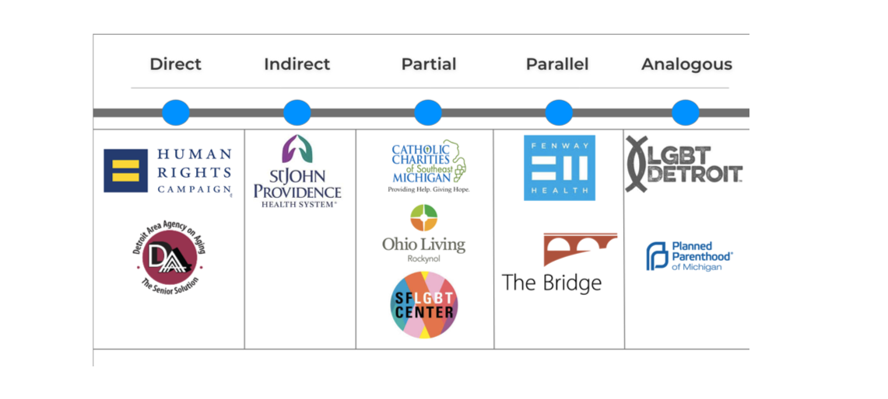
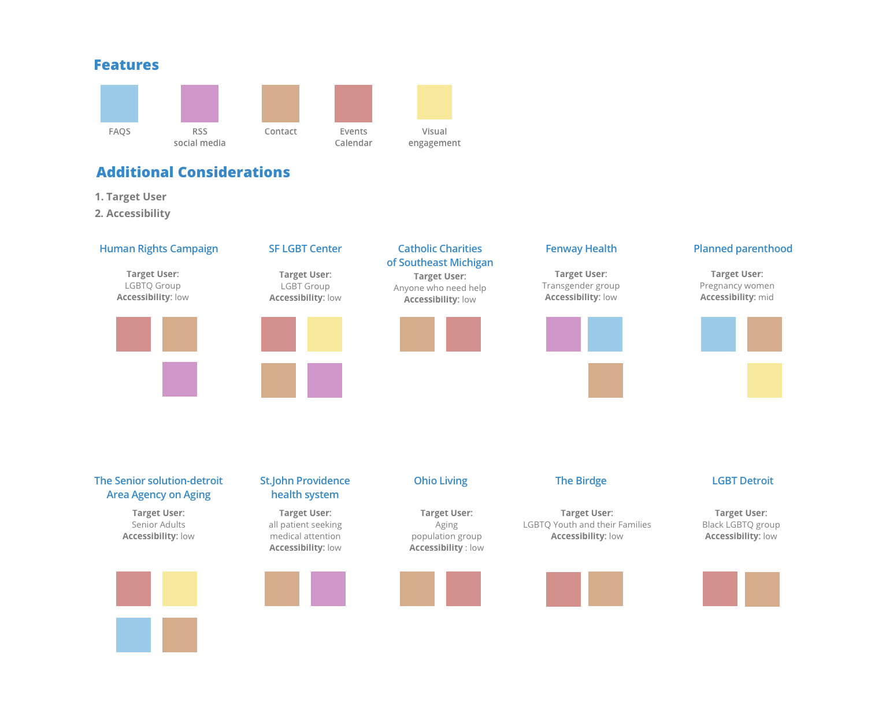

Older LGBTQ+ Adult Virtual Outreach
Project Type
Group Project
Project Goal
Help to understand what LGBTQ+ aging population health needs and how to better provide them information vitually
Our Client
Our client is a non-profit health care center which provides primary health and aging services focusing on the LGBTQ community. They are trying to build a more accessible and engaging aging services platform to better help users access the health information they need online.
Time
Jan 2020 - Present
Involvement
User Researcher
Methods
Competitive analysis, Interview, Survey (updating)
Teammates
Yi Wu, Andrew Russel, Jamal Brook, and Bingyi Liu
Instructor
Mustafa Naseem, Professor of SI 622 - Needs Assessment and Usability Evaluation
Interviews
01. Key Findings:
02. recommendations:
03. Take Aways:
FAQs: Among Corktowns Health’s comparators, Planned Parenthood employed the most unique and interactive FAQ. Planned parenthood currently has a chatbot service that can auto-reply frequently asked questions from their database. The replies generated by chatbot are humanized which provides heart-warming experience for their users (reference that screenshot). A more traditional FAQ is best represented by Detroit Area Agency on Aging, a simple FAQ page listing an exhaustive list of questions and answers with the option to download as a PDF. An FAQ section versus a searchable database reflects the scope of responses an organization is looking to address. While Searchable Databases offer more flexibility, they do not always manifest in productive ways. Alternatively, an FAQ addresses a select set of questions, but does so in a precise way.
Competitive Analysis
01. Methods:
In this study, we evaluated 10 comparators in order to, have a better sense of what features and qualities are standard in the industry, and have insights into the similarities and differences between our Client. The selected comparators represent a diverse set of capabilities ranging from, directly competing with our client, to platforms that do not necessarily provide health services but provide insights on how to better engage users over the internet and social media.
02. Key Findings:
a. FAQs:
Among Corktowns Health’s comparators, Planned Parenthood employed the most unique and interactive FAQ. Planned parenthood currently has a chatbot service that can auto-reply frequently asked questions from their database. The replies generated by chatbot are humanized which provides heart-warming experience for their users (reference that screenshot). A more traditional FAQ is best represented by Detroit Area Agency on Aging, a simple FAQ page listing an exhaustive list of questions and answers with the option to download as a PDF. An FAQ section versus a searchable database reflects the scope of responses an organization is looking to address.
a. Contact:
All our comparators have a contact page on their website including addresses, phone numbers, and emails. There are 2 primary healthcare providers including Fenway health and St John's Providence Hospital we believe are worth analyzing in detail about this feature:
There are contact information and feedback forms divided by different services in the contact page of Fenway health including general inquiry, research questions, trans health and appointment making, etc. St John's Providence Hospital places their chat form below the general contact and also places contact information regarding different services on the side.
c. Visually engaging content:
Currently, our client's website utilizes colored texts in most parts of the website with limited usage of images. On the contrary, Catholic Charities of Southeast Michigan does an interesting job listing the services using images that are clickable. It is worth looking into that method of presentation because it makes it easier to understand rapidly.

03. recommendations:
04. Take Aways:


{kind=link}
{kind=link}
{kind=link}